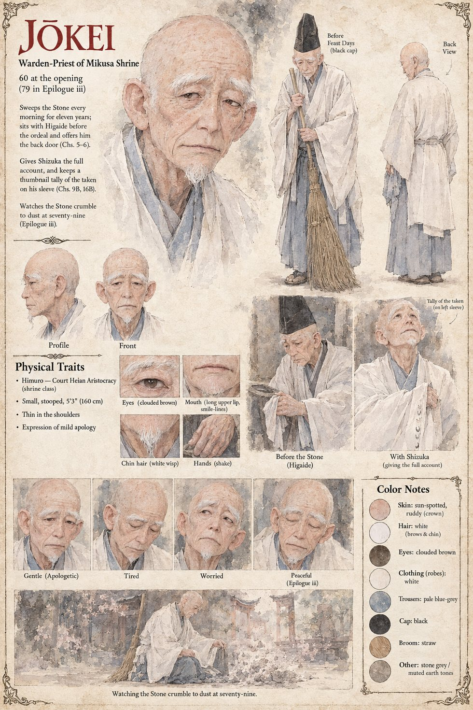

Jōkei
Warden-Priest of Mikusa Shrine · 60 at the story's opening, 79 when the Stone comes apart
A bald, mild, apologetic priest who tended the hillside shrine of Mikusa for thirty years before the Stone arrived, in which time he presided over some seven hundred weddings and a larger number of funerals. He sweeps the ordeal court with a broom and wipes the block with a damp cloth, and has never in eleven years set his bare palm to it; the backs of his fingers have found it cold in summer and, in winter, faintly warm. He sits with the accused as the Law requires, and with Shizuka's husband he goes further, pointing out a door at the back of the chamber, the most dangerous sentence of his life. He is told there is no door for an innocent man.
He writes the finding in the Book of the Ordeal and, under it, without being told, the Captain's one sentence. He gives Shizuka the whole account. By the third hand he watches go, Kanemichi's, he has begun to keep a tally on the inside of his sleeve with a thumbnail, because someone ought to. At seventy-nine he finds the Stone come apart into a low heap of pale dust in the exact shape of itself, sweeps the last of it into the rill, and enters one line: that the Stone has gone and the kami has given no reason. He leaves untouched the former Minister's signed sheet pasted into the last leaf.
Appears In

Related Subjects


Related Records

At the grey of dawn on the twentieth of Garren, Tomobe no Higaide sets his left palm on the Stone of Mikusa and goes into it as pale grain, in the sight of Jōkei, his three senior priests and a Minister with Azuki curled in the fold of his sleeve.